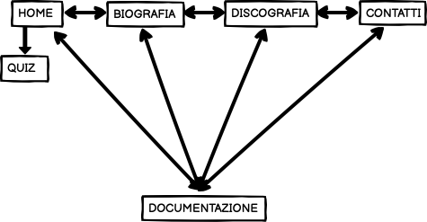
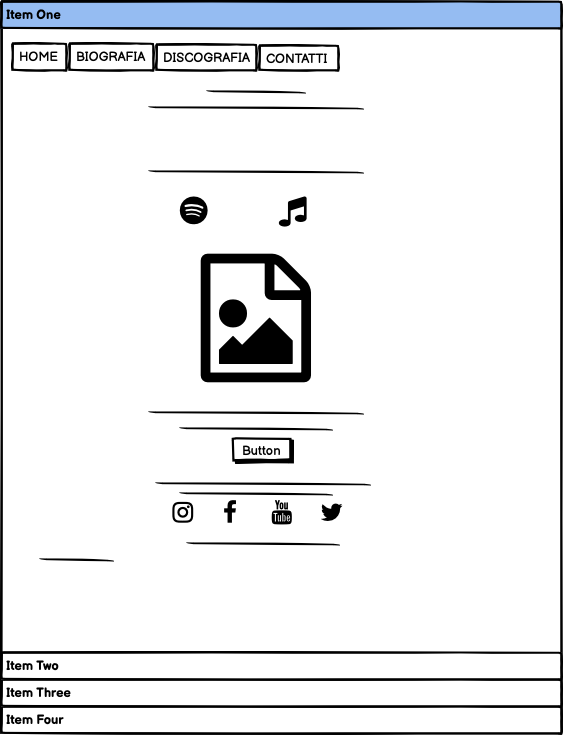
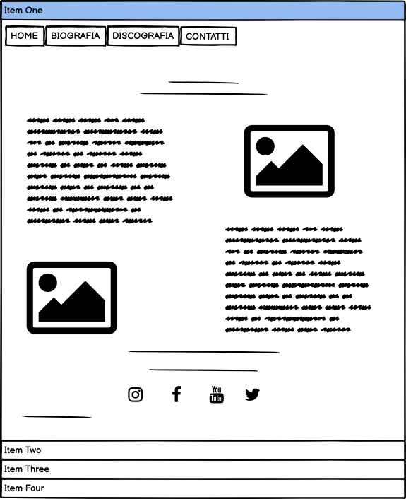
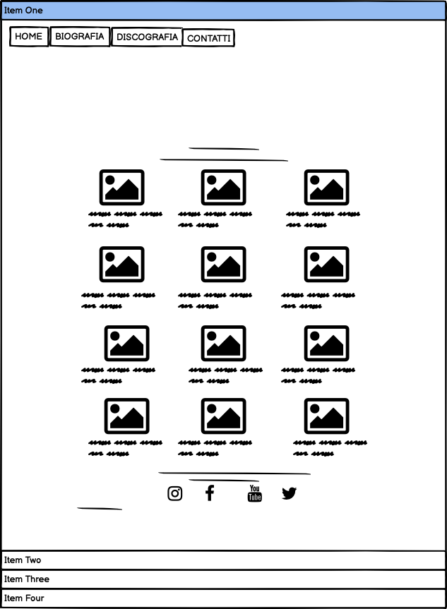
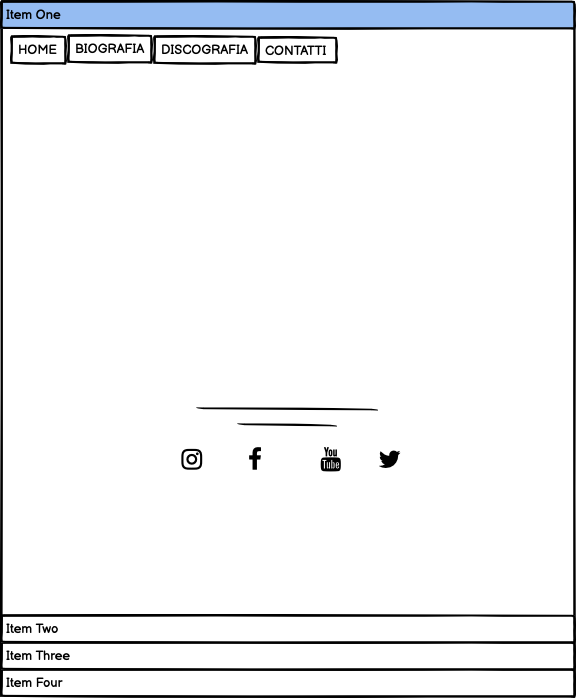
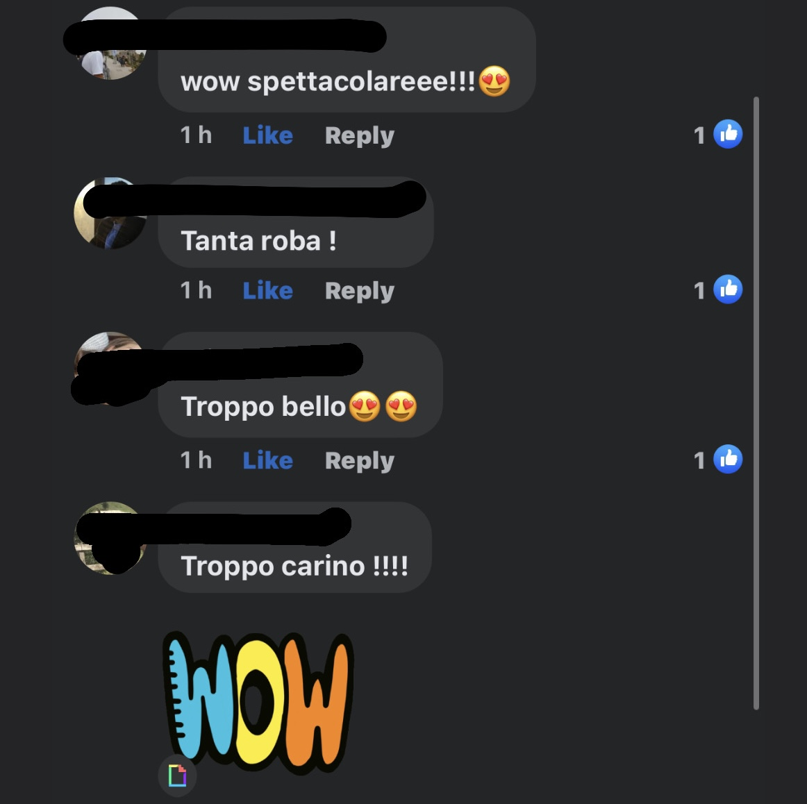
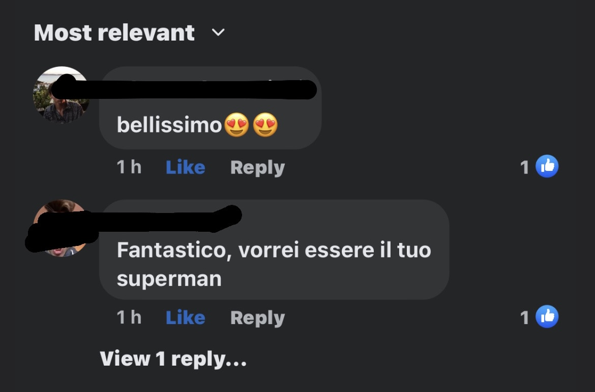

Il sito nasce con lo scopo di condividere con una platea il più ampia possibile la nostra passione per Eminem, cercando di diffondere e far approfondire la conoscenza di questo artista. A tal fine abbiamo cercato di realizzare un sito originale e accattivante, pur nella sua semplicità, in grado di coinvolgere diverse fasce di età, cosa di cui in effetti abbiamo poi avuto riscontro sia dalle risposte del quiz che dai vari commenti lasciati sui social.
L’obiettivo principale del sito è promuovere il nostro artista preferito, Eminem, diffondendo la conoscenza della sua musica, dei suoi album e della sua vita, cercando di farlo in modo creativo e divertente.
Il target a cui ci rivolgiamo in realtà è piuttosto ampio, in quanto l’artista abbraccia più generazioni, dai giovanissimi, grazie alle recenti e numerose collaborazioni con i più noti artisti di tendenza, agli over 40.
I I competitors principali che abbiamo analizzato sono i siti eminem.fandom.com, eminem.pro all’interno dei quali abbiamo riscontrato similutini per quanto riguarda la scelta dei colori, ovvero l’alternarsi delle tonalità del rosso e del nero, in quanto sono quelli che si trovano comunemente nei vari album dell’artista. A differenza di questi siti, più completi ma anche più complessi del nostro, noi abbiamo optato per un contenuto più essenziale e meno caotico, in modo che l’utilizzo da parte dell’utente sia più immediato e più intuitivo. D’altra parte il nostro sito si rivolge non tanto a chi conosce già bene Eminem e si aspetta informazioni dettagliate ed approfondite, bensì a coloro che si stanno avvicinando all’artista.





Per quanto riguarda la scelta dei colori del sito, abbiamo optato per la semplicità e l’eleganza delle sfumature del bianco e del nero, creando poi un vivace contrasto mediante l’utilizzo di inserti di colore rosso acceso. La scelta del rosso e del nero è stata fatta anche per le scritte, con l’intento di riprendere i colori quasi sempre presenti sulle copertine degli album dell’artista e, più in generale, legati al suo stile (abbigliamento, gadgets, ecc.) Il posizionamento degli elementi della pagina è stato impostato secondo una logica di semplificazione ed intuitività per facilitarne l’utilizzo da parte degli utenti, con un design piuttosto basico e pulito anche nella scelta dei font. Abbiamo rispettato il font del logo originale dell’artista, al quale abbiamo sovrapposto, spostata un pò in basso, una scritta in rosso utilizzando un font in corsivo facilmente leggibile ma dallo stile moderno, così come il font utilizzato per la scritta subito successiva. Per il resto del sito abbiamo utilizzato un font che fosse in linea con lo stile semplice ed elegante del nostro progetto.
-HTML
-CSS
-BOOTSTRAP
-W3SCHOOL
-GOOGLE FONTS (caratteri delle lettere)
-FONT AWESOME (icone)
-GITHUB (pubblicazione)
Avendo osservato i siti dei competitor, che abbiamo trovato così pieni di nozioni da risultare dispersivi, abbiamo deciso di essere più sintetiche ed efficaci possibile, in modo che gli utenti possano raggiungere facilmente le informazioni essenziali.
Per rendere il nostro sito più interattivo abbiamo deciso di creare un quiz per coinvolgere gli utenti affinché, rispondendo a qualche domanda, possano scoprire in quale stato d’animo/personalità delle varie canzoni di Eminem più si rispecchiano. A livello numerico l’obiettivo che ci siamo preposte è avere minimo 20 risposte al quiz e almeno 20 mi piace ai post pubblicati sul profilo instagram del sito che abbiamo creato. Inoltre stiamo raccogliendo feedback tramite commenti su facebook e messaggi.
Dai dati che abbiamo raccolto è emerso che persone di età differenti hanno apprezzato e partecipato con entusiasmo al quiz. Il messaggio che vogliamo trasmettere è che la musica ha mille sfumature ed è in grado di trasmettere le più diverse emozioni, in cui ciascuno di noi si può riconoscere e alle quali si può abbandonare. Eminem ha avuto una vita particolarmente intensa e travagliata, e proprio per questo è in grado, più di altri, di spaziare tra i vari stati d’animo dell'essere umano. Inoltre è anche simbolo di rivalsa e realizzazione, nonostante i suoi trascorsi, ed i suoi testi, a volte crudi e sfrontati, ma mai banali, sono spesso fonte di denuncia sociale o politica.
Abbiamo creato un profilo Instagram del sito in cui abbiamo cercato di interagire il più possibile con gli utenti. Inoltre abbiamo condiviso il nostro sito in modo tale da ricevere più feedback possibili.
Obiettivi raggiunti:
Quiz:

Instagram:
Facebook/Messaggi:
 